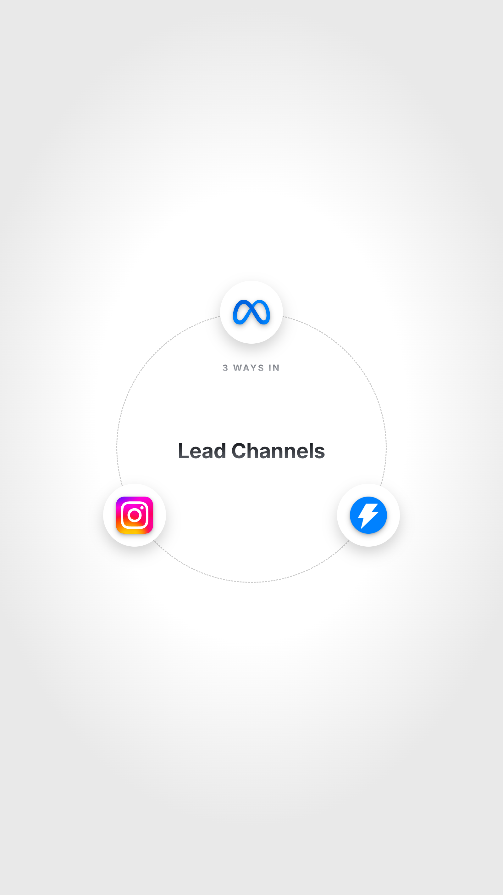
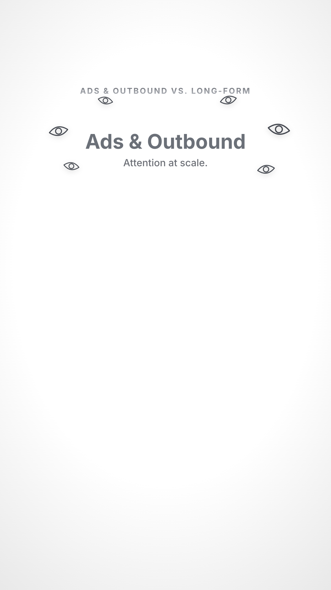
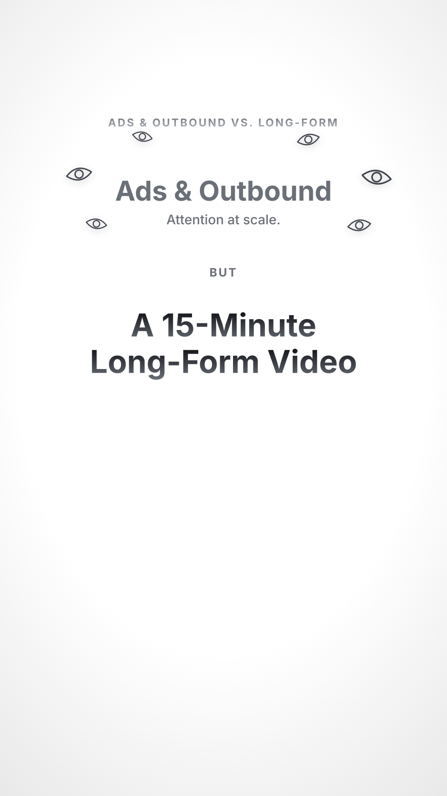

Meta Ads
Cold Email
Short-Form Content
Why They Switch


0
Entrepreneurs
SMMAE-comAI AgencySales
Ad Costs Rising
$8.2
avg CPM, 12 months
Creative Fatigue
3.1%
CTR after 6 weeks
Shadow-Banned
0%
reach, overnight


Ads & Outbound vs. Long-Form
Ads & Outbound
Attention at scale.
BUT
A 15-Minute
Long-Form Video
0:00 / 15:00
Shows how you think
Gives proof
Answers objections
before the call
before the call
The YouTube Advantage
+
Doesn't Replace.
It Multiplies.
Every channel converts better.
Qualify In 2 Seconds
High-Ticket Offer
5+ Active Clients
Comment
“video”
We'll make you a free long-form YouTube video.